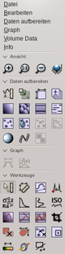
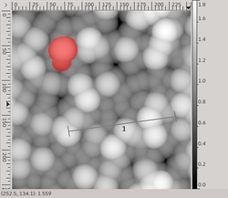

Gwyddion
Dieser Artikel wurde für die folgenden Ubuntu-Versionen getestet:
Ubuntu 14.04 Trusty Tahr
Zum Verständnis dieses Artikels sind folgende Seiten hilfreich:
Gwyddion  ist ein Programmpaket zur Visualisierung und Analyse von 3D-Datensätzen (X,Y,Z). Primäres Einsatzgebiet ist die Auswertung von Rastersondenmikroskopiebildern (wie AFM, STM oder SEM). Zu diesem Zweck unterstützt es viele Dateiformate kommerzieller Geräte.
ist ein Programmpaket zur Visualisierung und Analyse von 3D-Datensätzen (X,Y,Z). Primäres Einsatzgebiet ist die Auswertung von Rastersondenmikroskopiebildern (wie AFM, STM oder SEM). Zu diesem Zweck unterstützt es viele Dateiformate kommerzieller Geräte.
Das Programm kann aber aufgrund der nicht nur auf Rastersondenmikroskopie beschränkten Funktionen auch zur Analyse jeder Art von Bildern benutzt werden. Gwyddion ist unter der GPL 2  lizenziert und kann durch eigene Module erweitert werden. Der Quellcode steht auf der Projektseite zum Download bereit.
lizenziert und kann durch eigene Module erweitert werden. Der Quellcode steht auf der Projektseite zum Download bereit.
Leider ist das Programm zurzeit nur zum Teil auf deutsch übersetzt.
Installation¶
Gwyddion kann direkt aus den offiziellen Paketquellen installiert werden [1]:
gwyddion (universe)
 mit apturl
mit apturl
Paketliste zum Kopieren:
sudo apt-get install gwyddion
sudo aptitude install gwyddion
Benutzung¶
|  |
| Gwyddion Hauptfenster |
Der Aufbau der graphischen Oberfläche von Gwyddion orientiert sich an dem traditionellen Mehrfenstermodus von GIMP, d.h. jedes Bild wird in einem neuen Fenster geöffnet. Nach dem Start von Gwyddion erscheint zunächst das Hauptfenster, das sich in eine vertikale Menüspalte, das Ansichts-, Graph-, Daten aufbereiten-, und Werkzeugmodul unterteilt.
Das vertikale Menü bietet Zugriff alle Funktionen zur Datenbearbeitung. Unter dem Menüpunkt "Daten aufbereiten" finden sich Funktionen für die weitere Analyse der eingelesenen Bilder. Der Menüpunkt "Graph" fasst Operationen zusammen, die auf extrahierte (X,Y)-Profile angewendet werden können. Handelt es sich bei den importierten Daten um räumlich aufgelöste Spektren, d.h. jeder Bildpunkt enthält einen weiteren (X,Y)-Datensatz, dann finden sich entsprechende Operationen im Menü "Volume Data".
Daneben ist eine Python-Schnittstelle für Skripte implementiert. Diese findet man unter "Daten aufbereiten -> Pygwy Console".
Datenimport¶
Den Dialog zum Einladen von Daten in Gwyddion erreicht man durch den Menüpunkt "Datei -> Öffnen" oder durch Strg + O . Kann die physikalischen Bildabmessungen (Länge, Breite, Höhe) nicht aus der Datei entnommen werden (dies ist zum Beispiel beim Einlesen von Bitmaps der Fall), dann folgt nach der Dateiauswahl ein weiterer Dialog in dem die Abmessungen manuell angegeben werden können.
Häufig wird in den Dateiformaten der Rastersondenmikroskope nicht nur ein Kanal (bzw. eine Messgröße) in Abhängigkeit von der Position gespeichert, sondern mehrere (wie Höhe, Phase, Auslenkung der Messspitze, etc.). Diese werden alle in Gwyddion importiert, auch wenn diese nach dem Einlesen nicht sofort angezeigt werden. Den zur Analyse gewünschten Kanal kann man man im Menü unter "Info -> Daten-Browser" auswählen.
Datenanalyse¶
|  |
| Gwyddion Bildfenster mit Maskierung und Profilpfad. |
Gwyddion enthält sehr viele Funktionen, um Daten zu analysieren und aufzubereiten. Von diesen sollen hier nur die wichtigsten angesprochen werden. Allgemein gilt: Um eine Funktion auf ein Bild anzuwenden, muss das entsprechende Fenster zuvor ausgewählt worden sein. Alle Funktionen sind ausführlich im Gwyddion-Handbuch dokumentiert.
Nach dem Import wählt das Programm zunächst den Minimalwert und den Maximalwert des ausgewählten Kanals für die Enden der Farbskala. Um diese Farbskala manuell anzupassen, muss im Menü "Bearbeiten -> Farb-Gradient" oder über das Symbol "Farbskalierung" im Werkzeugmodul der Farbskalendialog aufgerufen werden und das zweite Icon "Bewusst einen festen Farbbereich setzen" in diesem Dialog ausgewählt sein. Daraufhin können Minimal- und Maximalwerte der Farbskala im darunter dargestellten Histogramm durch  und ziehen festgelegt werden.
und ziehen festgelegt werden.
Einfache Funktionen wie den "Wert unter dem Mauszeiger auszulesen", um (Höhen-)Werte an bestimmten Bildpunkten zu bestimmen, oder "Abstände und Richtungen ausmessen", verbergen sich hinter Icons im Werkzeugmodul.
Weitere Analysefunktionen, um beispielsweise Rauheiten, Periodizitäten oder Verteilung von Defekten zu ermitteln, findet man zum Teil im Werkzeugmodul oder unter dem Menüpunkt "Daten aufbereiten".
Es ist mit Gwyddion zudem möglich Pfade durch das Bild zu legen, um entlang dieser (Höhen-)Profile zu erhalten. Dazu wählt man im Werkzeugmodul das Icon "Profil extrahieren". Nach dem Erscheinen des Dialogfensters kann man den Profilpfad in das Bild einzeichnen. Durch Klicken der Schaltfläche "Anwenden" werden diese dann als Liniendiagramm in einem eigenen Fenster dargestellt und können mithilfe der Funktionen im Menüpunkt "Graph" weiter analysiert werden. Dort finden sich auch Funktionen für das Speichern des Diagramms als Bitmap oder das Exportieren in Form von (X,Y)-Datensätzen in eine Textdatei.
Daten aufbereiten¶
Neben der eigentlichen Datenanalyse müssen diese häufig auch bearbeitet werden, um Messfehler zu korrigieren oder bestimmte Besonderheiten im Bild hervorzuheben. Für diese Zwecke sind in Gwyddion verschiedene Funktionen für den Untergrundabzug und unterschiedliche Filter implementiert. Im Modul Daten aufbereiten im Hauptmenü finden sich Funktionen, die eine (erste) automatische Korrektur von Bildfehlern und Messartefakten ermöglichen. Fortgeschrittene Werkzeuge, um die Daten gezielt zu bearbeiten, finden sich dagegen im Werkzeugmodul und im Menü "Daten aufbereiten".
Besonders interessant ist die Maskierungsfunktion. Mit dieser können Bereiche im Bild markiert werden, die bei der Analyse oder bei Operationen nicht berücksichtigt werden sollen (Achtung: Funktioniert nicht mit allen Funktionen. Genaueres dazu in der Dokumentation der jeweiligen Funktion). Dazu wählt man im Werkzeugmodul das Icon "Maske bearbeiten". Daraufhin erscheint der Maskeneditor in dem man die Maskenformen, die man zeichnen möchte, auswählt.
Die Maske kann dann direkt in das Bild gezeichnet werden. Standardmäßig erscheinen maskierte Bereiche rot. Im Maskeneditor können die Masken auch wieder entfernt werden. Ausgezeichnete Bereiche wie Defekte, Artefakte, etc. können auch automatisch maskiert werden. Die entsprechenden Funktionen finden sich unter "Daten aufbereiten -> Körnung".
Für den Untergrundabzug bietet Gwyddion neben den Standardverfahren im Modul "Daten aufbereiten" weitere Methoden wie z.B. die den zeilenweisen Untergrundabzug durch Anpassen eines Polynoms höheren Grades (im Menü "Daten aufbereiten -> Correct data" und "Daten aufbereiten -> Nivellierung") oder auch einen ebenen Untergrundabzug durch Angabe dreier Punkte (zu finden im Werkzeugmodul).
Daneben können weitere Bildartefakte (wie Fehlerzeilen, Hochfrequenzrauschen, etc.) mithilfe verschiedener Filter automatisch korrigiert und entfernt werden. Diese findet man zum einen im Werkzeugmodul, zum anderen unter dem Menüpunkt "Daten aufbereiten".
Spezielle Funktionen für die Rastersondenmikroskopie¶
Gwyddion bietet einige spezielle Funktionen, die im Bezug auf Rasterkraft- und Rastertunnelmikroskpie nützlich sind. So können Kalibrationsdaten des Messaufbaus eingelesen werden, um diese zur Bildkorrektur zu nutzen. Auch ist die Simulation topographischer Bilder sowie die Faltung mit einer künstlichen Spitze möglich, um Bildartefakte zu rekonstruieren.
Bildexport¶
Die bearbeiteten Daten können unter "Datei -> Speichern unter" entweder im nativen Format von Gwyddion gespeichert werden oder auch in unterschiedliche Bitmapformate wie JPG oder PNG exportiert werden.
- Erstellt mit Inyoka
-
 2004 – 2017 ubuntuusers.de • Einige Rechte vorbehalten
2004 – 2017 ubuntuusers.de • Einige Rechte vorbehalten
Lizenz • Kontakt • Datenschutz • Impressum • Serverstatus -
Serverhousing gespendet von